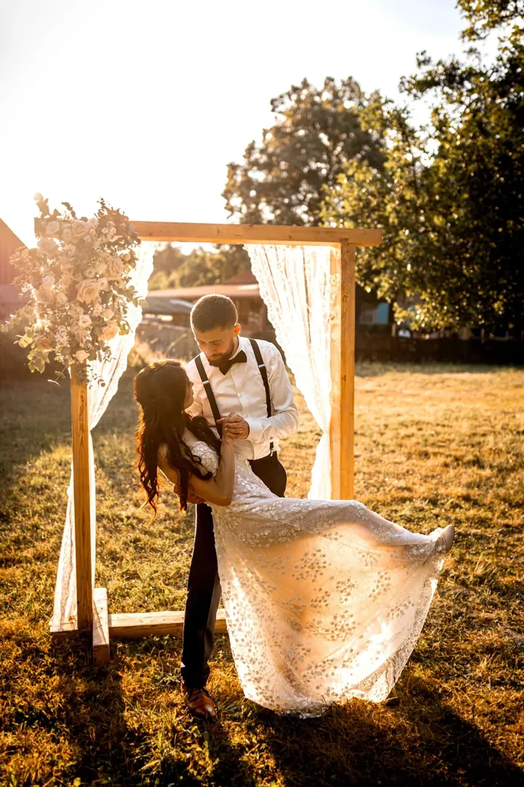
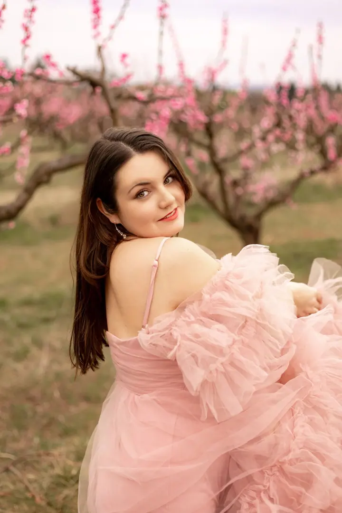
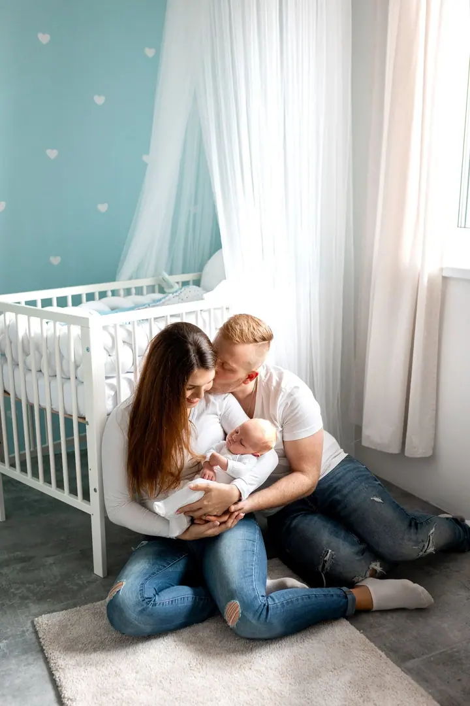

jedna
Svatební focení
Svatby fotím nejraději. Jsem s vámi od příprav přes obřad až po večerní slunce, kdy vznikají ty nejteplejší snímky vás dvou.

Svatební a rodinná fotografka · Brno, Jihomoravský kraj

Jmenuji se Denisa Hlavičková a fotím svatby, těhotenství, miminka i rodinné oslavy v Brně a okolí. Mám ráda teplé světlo, jemné barvy a fotky, na kterých jste opravdu vy.
Více o mně
Co fotím
jedna
Svatby fotím nejraději. Jsem s vámi od příprav přes obřad až po večerní slunce, kdy vznikají ty nejteplejší snímky vás dvou.
dvě
Fotím v čistém světlém ateliéru i venku v přírodě. Klidně s partnerem, se staršími dětmi nebo s fotkou z ultrazvuku.
tři
Fotím první dny s miminkem, něžně a v klidu. Často u vás doma, v dětském pokoji, kde se cítíte nejlíp.
Fotím první narozeniny, rodinné oslavy a malé slavnosti. Dort, balonky i radost na fotkách, ke kterým se budete rádi vracet.
Fotky, které hřejí jako večerní slunce
Za objektivem
Jsem fotografka z Brna a nejvíc mě baví svatby. Ráda fotím venku při zapadajícím slunci, kdy je světlo měkké a zlaté a všechno působí trochu jako ve snu.
Vedle svateb fotím i chvíle, kdy se rodina rozrůstá: těhotenské focení, první dny s miminkem a první narozeniny. Fotím taky ženské portréty, v ateliéru i v kvetoucím sadu.
Na focení se nemusíte nijak připravovat ani umět pózovat. Povedu vás, a když bude potřeba, pomůžu s oblečením i místem. Mým cílem je, abyste si focení užili a z fotek měli radost ještě dlouho.
Denisa
Pošlete mi přes formulář termín a pár slov o tom, co chcete fotit. Ozvu se vám co nejdřív.
Probereme místo, čas, oblečení i vaše představy, ať víte, co čekat, a nic vás nepřekvapí.
Fotíme v klidu a bez spěchu. Povedu vás, takže pózovat umět nemusíte.
Vybrané fotky pečlivě upravím a pošlu vám je v online galerii, odkud si je snadno stáhnete.
Portfolio
Otázky
Hlavně v Brně a okolí, v Jihomoravském kraji. Kam jinam, se domluvíme podle vaší akce.
Obvykle když už je bříško hezky vidět, ale ještě se cítíte dobře. Přesný termín vám pomůžu naplánovat.
Ano, miminka ráda fotím doma v dětském pokoji. Je to pohodlné pro miminko i pro vás.
Cena se odvíjí od typu a délky focení. Napište mi, co plánujete, a já vám pošlu nabídku.